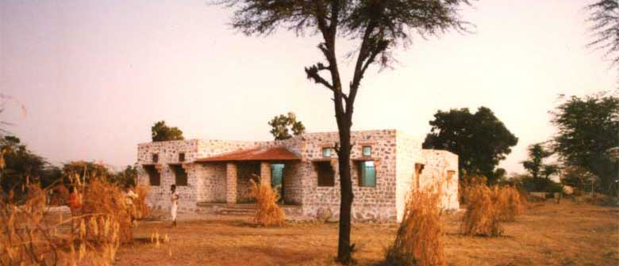
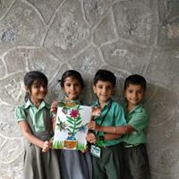
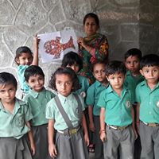
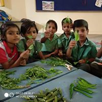
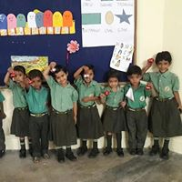
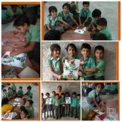
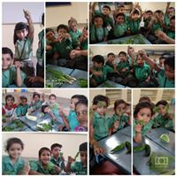

History :
The school was established in 1992 in the village of Bali, Rajasthan by William and John Bissell who recognized the need for a model school to empower young people in rural Rajasthan where literacy rates are extremely low, especially among women. After completing his studies in 1988, William Bissell lived for several years in Jodhpur, Rajasthan where he worked with rural artisans and various crafts co-operatives across the state. This formative experience strongly impacted his views on the critical role of education and the lack of high quality, affordable education in rural areas. William was passionate about creative approaches to education which brought out each child's inherent talents and the need to include environmental education in a local context. With input from many creative talents over the years, the school has become a model for preparing its students for success in life while contributing to the local community. In 2012 Sandeep Dutt joined the trust and is now the Chairman and Executive Director.
Mission :
The Fabindia School's mission is to provide access to high quality education for boys and girls at the rural level using English as the medium of instruction. The school views primary education as a major stepping stone towards social mobility, equality and employment opportunities.
Since its inception, the school has been committed to encouraging education for girls in a culture where most parents who can afford an English medium school would send only their sons. To realize the dream of providing equal educational opportunity for girls, the school gives up to 100 scholarships and 70% are for girls alone. The school also provides scholarships through a partnership with The John Bissell Scholars Fund. It is a matter of pride that girls hold many leadership posts in the school. In addition, the school seeks to enroll and subsidize children from socially and economically marginalized communities who otherwise do not have access to quality education.
One of the most important values imparted is for students to stay connected to their birthplace. They are instilled with a sense of pride in their local heritage and a sense of responsibility for the future of Rajasthan.
About The School :

The Fabindia School is a non-religious, non-profit, private school for boys and girls from ages three (Nursery class) through Class XII. In July 2008, after a rigorous application and review process, the Central Board of Secondary Education (CBSE) New Delhi, granted the much anticipated accreditation to The Fabindia School for Class XI and XII. Since the CBSE permits adding one new class per year, the school opened Class XI in 2008-2009 and added Class XII in 2009-2010. In 2012 the school had a 100% success rate in the CBSE Board exam.
The main school is located on an eight acre campus a few kilometres from the main road of Bali, a village in the Indian desert state of Rajasthan. The campus has several adjoining classroom buildings include a library, science labs, audio-visual room, computer centre and an English learning lab. The abundant green campus play fields, an outdoor auditorium, water harvesting system and a forest area to create a child-friendly, creative environment which harmonizes with the open green space. The adjoining six acre junior campus was added in 2013, and in addition to a child friendly Pre-Primary school, there are sports areas for the senior school, dance and music school, art and craft centre, a farm and a garage for the schools' transport fleet.
Starting with 11 students in 1992, today there are over 500 students with over 50% female enrolment. Students come from various villages across a 30 kilometre radius and are transported via one of the many school buses. The school maintains a teacher to student ratio of 1:30. The academic year runs from April to March. The school has been affiliated with India's premier educational board, Central Board of Secondary Education (CBSE), since 1997 and has produced consistently good results at the Class X Board exams every year. It has been allotted as a CBSE board exam centre for the annual board exams where students from schools across the area appear for their exams at The Fabindia School.
In keeping with its holistic approach to education, the school offers extensive extra curricular programs in addition to its comprehensive academic courses. School activities include a wide range of sports programs including opportunities to participate in regional tournaments, as well as drama, debate, arts and crafts, music, environmental education and community service to provide a well rounded education. Students also have the unique opportunity to go on educational field trips both within the state and beyond. For many students these trips are their first time away from home and the exposure to other cities and towns creates lifelong impressions.
While focusing on the local culture, the school also frequently welcomes visitors, trained specialists and volunteers from across India and overseas who contribute towards the campus, teaching and sharing their experiences with the students. This unique cross-cultural exposure creates a well-informed and broad minded student body. As many visitors have remarked, the energetic students show a respect for their culture and traditions but have a clear sense of the world around them.
  
 
Developed by :-Rakesh Suthar XIth
©Copyright-2019 The Fabindia School (All Rights Reserved)